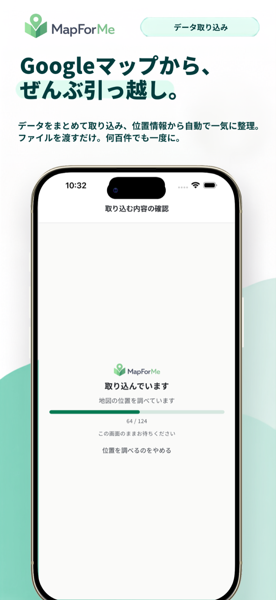
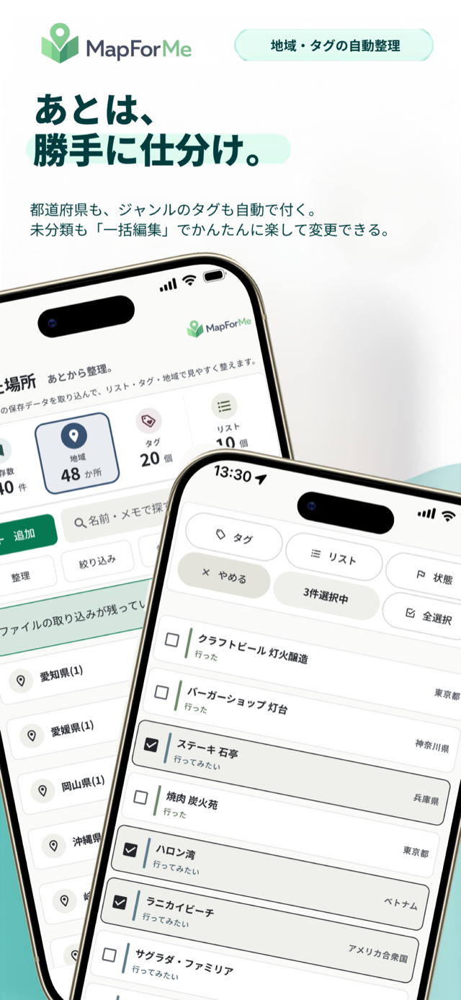
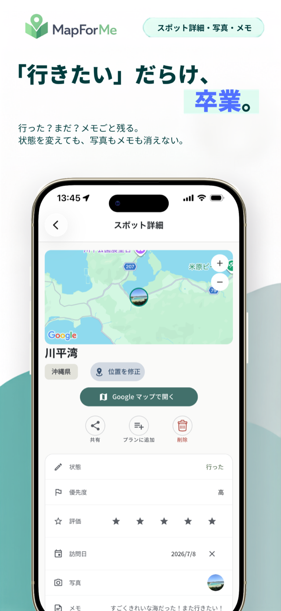
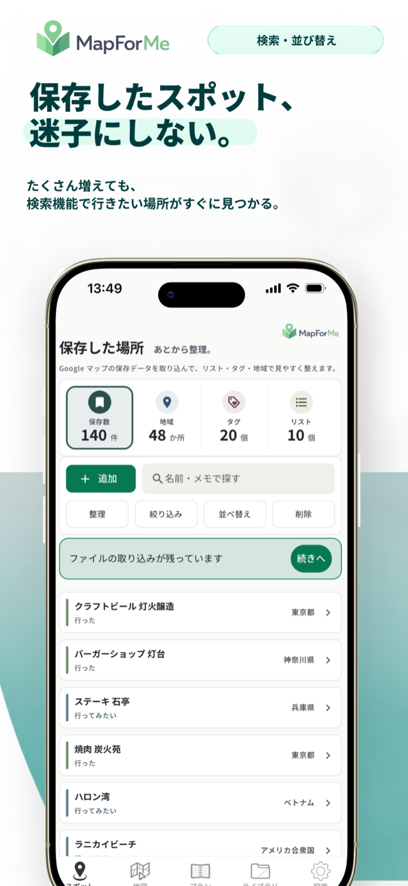
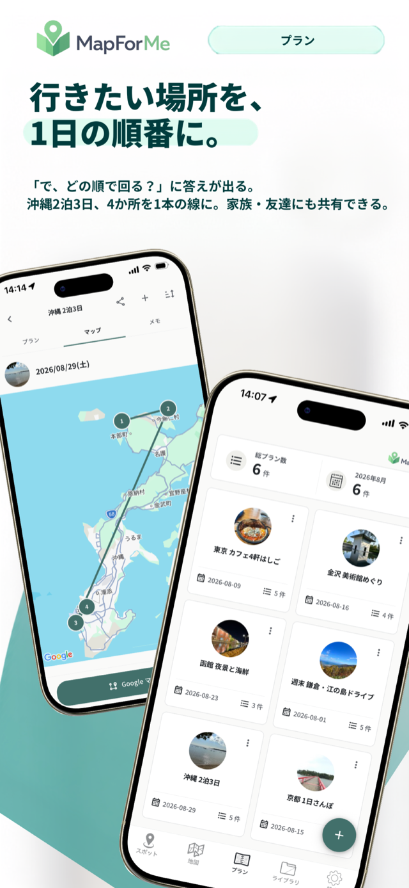
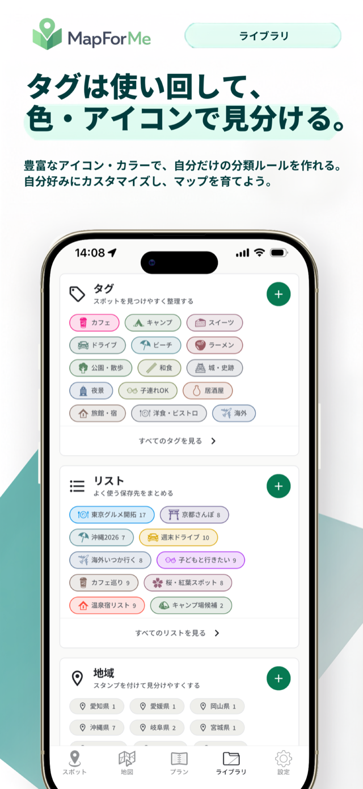

MapForMe — 保存したスポット、迷子にしない。Google マップの「行きたい」を、取り込み・整理・検索・プランまで、ひとつに。
アカウント登録不要 ・ 広告なし ・ データは端末の中に
SCREENSHOTS
散らかったピンが、使える地図に変わる。






← 横にスクロールできます
FEATURES
できること
旅行・おでかけ・日常の場所管理を、もっとかんたんに。
まとめてインポート
Google マップの保存リストを書き出したファイルを取り込めます。何百件でも一度に。共有シートからファイルを直接受け取ることもできます。
取り込みガイドを見る →自動で整理される
位置と住所を調べて、都道府県・国ごとの地域分けからジャンルのタグ付けまで自動で。フォルダ分けの手作業は要りません。
タグとリストで自分の基準に
「カフェ」「絶景・撮影」「子連れOK」など自由に作れます。色分けとアイコンで見分けもすぐ。ワンタップで絞り込めます。
増えても、すぐ見つかる
名前でもメモでも探せます。地域・タグ・リスト・状態を重ねて絞り込み、追加順・名前順・評価順に並べ替え。
行った / 行きたいの仕分け
訪問日や評価、写真とメモも残せます。行った地域はスタンプで埋まっていきます。まとめて片づける一括編集も。
おでかけプラン
行き先を並べるだけで順番を組み立て、そのまま Google マップのルート案内に渡せます。プランは家族や友人に共有できます。
IMPORT GUIDE
Google マップから、ぜんぶ引っ越し。
Google マップのデータはアプリからは書き出せないので、Google の「データエクスポート」を使います。初回だけの作業で、5分＋待ち時間。つまずきやすいところは、画像つきのガイドにまとめました。
Google に書き出しを申請する
takeout.google.com からリクエスト
メールが届いたらファイルをダウンロード
数分〜数時間で届きます
MapForMe でファイルを選んで取り込む
あとは自動で整理されます
PRICING
料金
無料のままでも、スポットの登録・タグやリストでの整理は制限なく使えます。
無料
¥0
ずっと無料
- スポットの登録・整理は無制限
- タグ・リスト・プランも無制限
- 取り込み時の自動整理（毎月の利用枠あり）
- 位置の修正（毎月の利用枠あり）
MapForMe Pro
¥400 / 月
年額 ¥4,000（2か月分お得）
- 無料版のすべての機能
- 取り込み時の自動整理を、より多くの場所に
- 位置の修正を、より多くの場所に
| 機能 | 無料 | Pro |
|---|---|---|
| どちらでも使えること | ||
| スポットの登録・整理件数の制限はありません | ✓ | ✓ |
| タグ・リスト・色分けいくつでも作れます | ✓ | ✓ |
| 地図表示・まとめ表示 | ✓ | ✓ |
| プラン（行き先の計画）いくつでも作れます | ✓ | ✓ |
| URL から追加共有シートから、その場で登録 | ✓ | ✓ |
| 一括データ取り込みGoogle マップの書き出しファイルから | ✓ | ✓ |
| データの書き出し | ✓ | ✓ |
| 広告なし | ✓ | ✓ |
| Pro で広がること | ||
| 取り込み時の自動整理位置と住所を調べて、地域・ジャンルまで自動で仕分け | 毎月の枠内 | 大きく広がる |
| 位置の修正自動で付かなかった・ずれた場所を、検索して選び直す | 毎月の枠内 | 大きく広がる |
利用枠の具体的な回数は、アプリ内の「設定」→「プランを比較する」でご確認いただけます。サブスクリプションは期間ごとに自動更新されます。解約はいつでも iPhone の「設定 > Apple ID > サブスクリプション」から行えます。
FAQ
よくある質問
取り込みがうまくいきません
いちばん多いのは「ダウンロードしたファイルが見つからない」ケースです。ファイル選択画面の「検索」に takeout と入力すると、保存場所をまたいで見つけられます。手順の全体は画像つきガイドにまとめています。
取り込みをやり直しても大丈夫？
大丈夫です。取り込むとき、リストごとに「リスト / タグ / スポットのみ / 取り込まない」を選べます。すでに MapForMe で整理した内容は消えません。何度やり直しても問題ありません。
アカウント登録は必要ですか？
不要です。データはすべて端末の中に保存されます。書き出し（バックアップ）もいつでもできます。広告も表示しません。
保存した場所や現在地は、どこかに送られますか？
登録した場所の名称・住所・座標、写真、メモ、GPS の現在地が開発者のサーバーに送られることはありません。詳しくはプライバシーポリシーをご覧ください。
解約はどこからできますか？
iPhone の「設定 > Apple ID > サブスクリプション」からいつでも解約できます。
「行きたい」だらけ、卒業。
保存して終わりだった場所を、行ける場所に。